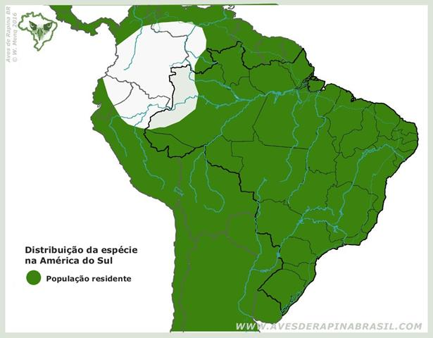

Coruja buraqueira
.jpg)
Nome científico:(Athene cunicularia Molina, 1782)
Nome comum: Coruja buraqueira
Classificação biológica:
Domínio: Eukaryota.
Reino: Animalia.
Filo: Chordata.
Classe: Aves.
Ordem: Strigiformes.
Família: Strigidae.
Gênero: Athene.
Espécie: Athene cunicularia.
Nutrição:Carnívora.
Hábitos alimentares:Alimenta-se de pequenos roedores, insetos, anfíbios, répteis, e, ocasionalmente, pequenas aves. Sua dieta é bastante variada e adaptada à disponibilidade de presas no ambiente.
Morfologia do corpo:Mede cerca de 20 a 28 cm de comprimento, com uma envergadura de aproximadamente 50 a 61 cm. Possui pernas longas e bico curvado, ideal para caçar suas presas.
Principais Presas:Roedores, insetos grandes, lagartos, cobras pequenas e pequenos pássaros. As presas variam dependendo do habitat, mas os roedores e insetos são os alimentos mais comuns.
Principais Predadores:Aves de rapina, como gaviões e falcões, além de mamíferos como raposas e gatos domésticos. Serpentes também podem representar um perigo, especialmente para os ovos e filhotes nos ninhos.
Locais habitados
Distribuição:Encontrada em Todos os Biomas do Brasil
Habitat:A coruja-buraqueira prefere áreas abertas, como campos, pastagens e savanas. Ela escava seus ninhos no solo, muitas vezes usando buracos abandonados por outros animais. Pode ser encontrada em áreas urbanas com terrenos abertos.
Reprodução:A coruja-buraqueira constrói seu ninho em tocas no solo, geralmente em buracos abandonados por outros animais, como tatus, ou cavados por elas mesmas. A fêmea põe de 3 a 11 ovos, que são incubados por cerca de 28 a 30 dias. Ambos os pais participam da criação dos filhotes, que começam a sair do ninho após cerca de 2 a 3 semanas.